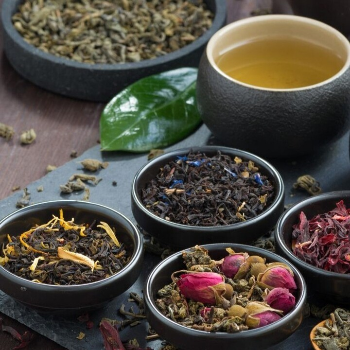

Green tea
Green tea is a type of tea made from the leaves of the Camellia sinensis plant that undergoes minimal oxidation
during processing, preserving its natural green color and fresh flavor. The leaves are typically steamed or
pan-fired shortly after harvest to prevent oxidation, resulting in a lighter taste profile that can range from
vegetal and grassy to sweet and floral, depending on the variety and region. Green tea is known for its numerous
health benefits, largely attributed to its high content of antioxidants, particularly catechins, which are believed
to support heart health, boost metabolism, and promote overall wellness. With a moderate caffeine content, green tea
can provide a gentle energy boost, making it a popular choice for those seeking a refreshing and health-conscious
beverage. Notable varieties include Sencha, Matcha, and Gyokuro, each with its unique flavor and preparation methods.
White tea

White tea is a delicate and minimally processed tea made from the young buds and leaves of the Camellia sinensis
plant, known for its subtle flavor and light color. The leaves are carefully harvested and allowed to wither and
dry naturally, without undergoing oxidation, which helps preserve their natural characteristics and results in a
mild, sweet, and floral taste profile. White tea is lower in caffeine compared to green or black teas, making it
a gentle choice for those seeking a lighter beverage. Rich in antioxidants, particularly catechins, white tea is
believed to offer various health benefits, including supporting heart health and promoting skin health. Popular
varieties include Silver Needle, which is made from only the buds, and White Peony, which includes both leaves and
buds, making white tea a prized and sought-after option among tea enthusiasts.
Black tea

Black tea is a fully oxidized type of tea made from the leaves of the Camellia sinensis plant, known for its
bold flavor and dark color. The production process involves withering the leaves, rolling them, and allowing
them to oxidize completely, which enhances their robust taste and aroma. Black tea typically has a stronger
flavor profile than other types of tea, often characterized by malty, sweet, or even smoky notes, depending on
the variety. It contains more caffeine than green or white teas, making it a popular choice for those seeking a
stimulating beverage. Black tea is rich in antioxidants, particularly flavonoids, which are associated with various
health benefits, including improved heart health and better cholesterol levels. Common varieties include Assam,
Darjeeling, and Earl Grey, and it can be enjoyed plain or with additions like milk, sugar, or lemon.
Red tea

Red tea can refer to two different types depending on the context. In South Africa, red tea typically refers
to rooibos, a naturally caffeine-free herbal tea made from the leaves of the Aspalathus linearis plant, known
for its sweet, earthy flavor and reddish hue after fermentation. In Chinese culture, however, red tea refers
to what Westerners call black tea, made from fully oxidized Camellia sinensis leaves, named for the reddish color
of its brewed liquid. Both types are enjoyed for their unique flavors and health benefits, but rooibos is herbal,
while Chinese red tea contains caffeine.
Herbal tea

Herbal tea, also known as a "tisane," is a beverage made by infusing various herbs, spices, flowers, fruits,
or other plant materials in hot water, rather than from the leaves of the Camellia sinensis plant, which
produces traditional teas. Herbal teas can encompass a wide range of ingredients, such as chamomile,
peppermint, hibiscus, and ginger, resulting in diverse flavors and aromas that can be sweet, spicy, or
floral. Most herbal teas are naturally caffeine-free, making them suitable for any time of day, and they are
often believed to offer various health benefits, including promoting relaxation or aiding digestion, depending
on the specific ingredients used. Herbal teas can be enjoyed hot or cold and can be customized with sweeteners or
additional flavors according to personal preference.
Matcha tea
Matcha tea is a finely ground powder made from specially grown and processed green tea leaves, primarily from
the Camellia sinensis plant. Originating in Japan, matcha is unique because the tea plants are shaded for several
weeks before harvest, which enhances the chlorophyll content and amino acids, resulting in a vibrant green color
and rich flavor. Unlike traditional steeped green tea, where the leaves are removed, matcha is consumed whole,
providing a higher concentration of antioxidants, vitamins, and minerals. It has a smooth, creamy taste with a
slightly grassy flavor, often described as umami. Matcha is not only enjoyed as a hot or cold beverage but is also
popular in various culinary applications, including desserts and smoothies, and is known for its potential health
benefits, including increased energy, improved focus, and relaxation.